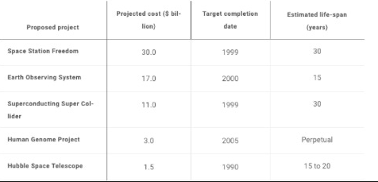

When the human genome project was deemed “complete” in 2003, it was met with incredible fanfare. The entire project leading up to that moment had all the drama to keep its audience enthralled. Fierce rivalry between a public and private institution, multiple countries involved, 3.5 billion dollars at stake, and 13 years invested. It was a herculean effort and at the end of all that, we had decoded life itself and now had a map of the human genome. It was the biological equivalent of putting a man on the moon. It was predicted that as a consequence of the human genome project, we would ’’unlock the secret to human life” and revolutionize medicine and our understanding of human health and disease. Even when the “useful life” of projects was considered, the shelf life of the scientific tool produced by the HGP was, effectively, forever.
